Префектура Хоккайдо · Нисэко · рестораны
Нисэко за столом: икра от Kanisushi Kato и трюфельное масло KAMIMURA
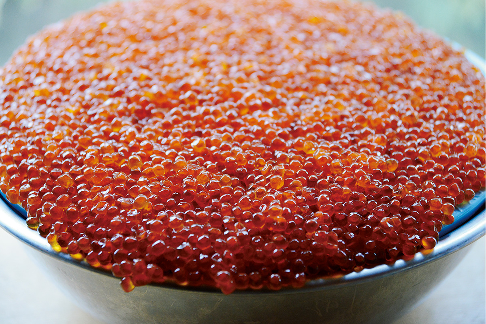
Нисэко известен как международный курорт, и в городке Куттян работают два ресторана, которые строят меню на продуктах Хоккайдо. В одном шеф-повар каждую осень сам солит лососёвую икру, в другом к хлебу подают масло с трюфелем, которое много лет нельзя было унести с собой.
Нисэко
Курорт, где хорошо едят
Нисэко славится природой, одной из самых красивых на Хоккайдо, и стал международным курортом, куда едут гости из Японии и из-за границы. Два ресторана из этой статьи находятся в городке Куттян, и оба строят меню на продуктах Хоккайдо: один на морских, другой на молочных и фермерских.
Японская кухня
Kanisushi Kato: икра, которую делают руками
Kanisushi Kato в Нисэко открыла «Като Суйсан», старая оптовая компания с Хоккайдо, которая торгует крабами. Здесь подают кайсэки, японскую трапезу из многих небольших блюд, и гости сидят за стойкой. В меню местные крабы, морские ежи и рыба по сезону.
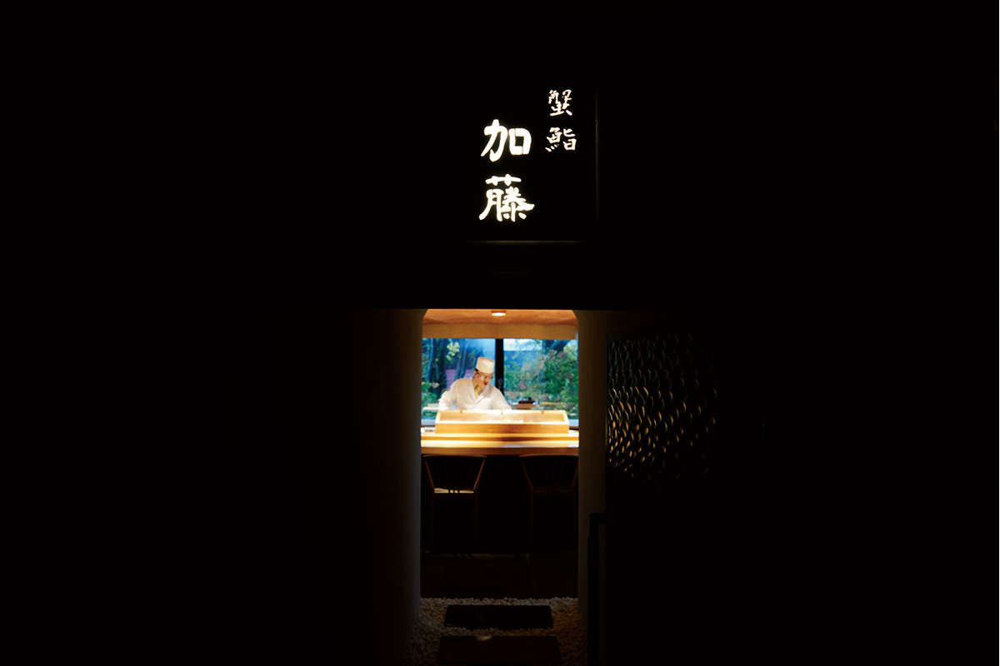
Самое известное блюдо ресторана появляется с началом сезона осеннего лосося. С сентября до середины октября, когда лосось идёт к родным рекам, шеф-повар сам делает икру в соевом маринаде. Для неё нужны ястыки рыбы, пойманной ещё в открытом море. Принято думать, что лучший лосось тот, что поднимается по реке, но с икрой всё наоборот. Чем ближе нерест, тем твёрже оболочка икринок: так природа защищает их, ведь после нереста они должны выжить сами. У рыбы, пойманной в реке или у берега, икра лопается во рту, а плёнка остаётся на языке. Японцы называют такую икру «пинг-понговой».
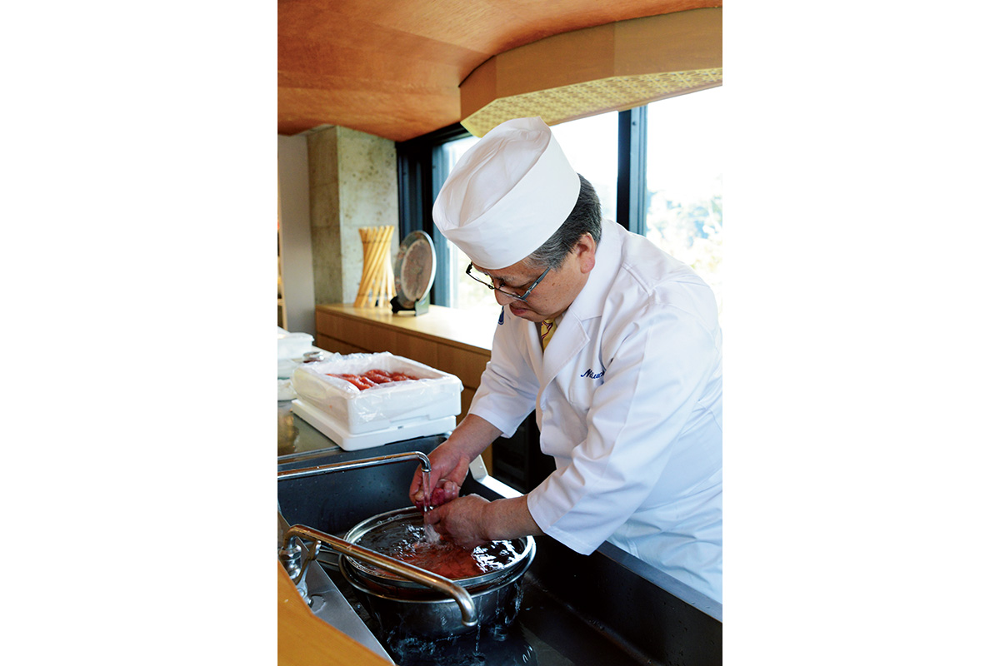
Шеф-повар начинает с проверки: раздавливает пальцами три икринки и смотрит, какая у них оболочка. Изредка попадаются ястыки с твёрдой икрой, и их важно не смешать с остальными. Потом икру осторожно разбирают в миске под струёй воды. Металлическую сетку здесь не используют, чтобы икринки успели набухнуть и не помялись.
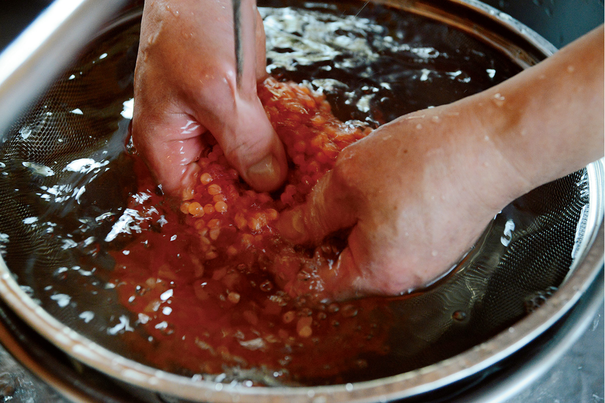
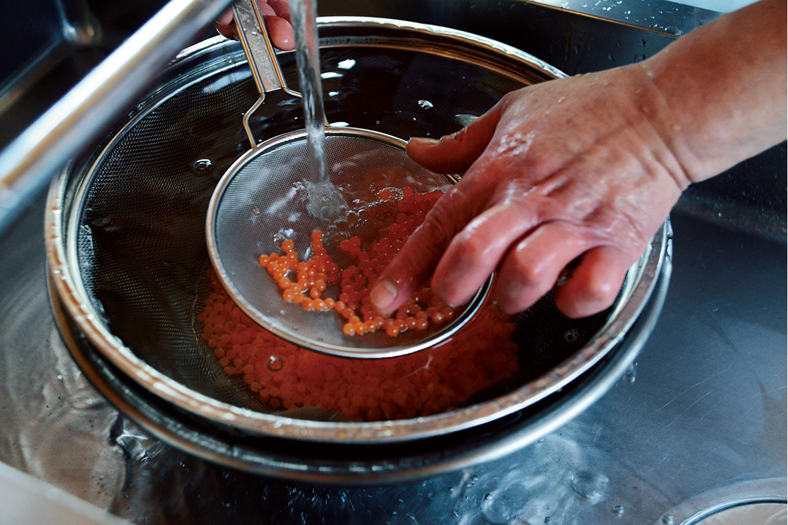
Там, где плёнка плотно прилегает к икре, её отделяют на сите под водой, до последней икринки. Затем икру на ночь оставляют в соевом маринаде собственного рецепта. На следующий день, прежде чем откинуть её на сито, повар делает ещё одну работу: оболочка у такой икры тонкая, часть икринок неизбежно лопается, и всплывшие плёнки он по одной вынимает пинцетом. Стабилизаторов, консервантов и усилителей вкуса в икре нет.
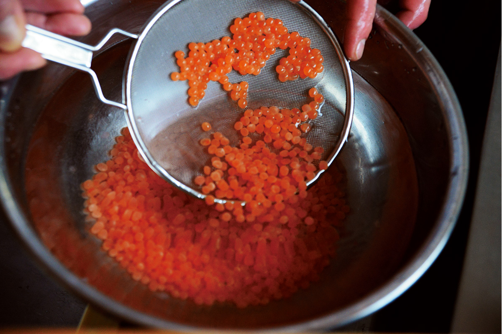
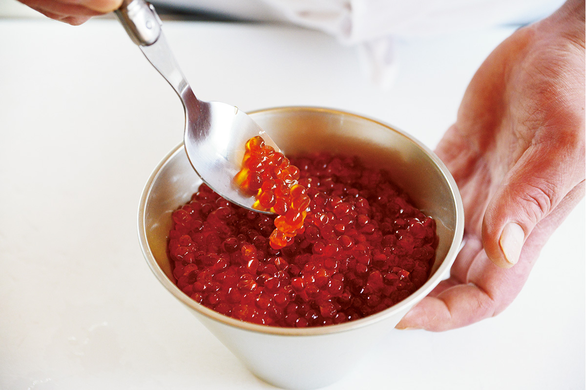
Вкус у икры насыщенный, но не слишком солёный: сначала чувствуешь саму икру, потом маринад. Оболочка такая мягкая, что икринки почти тают на языке. Ужин в Kanisushi Kato заканчивается рисом с икрой, и сверху его поливают «икорным соусом». Его шеф-повар делает сам из тех икринок, что лопнули при разборке.
Зимой 2021 года ресторан отправлял икру по почте: осеннюю икру заморозили и продали 100 наборов по два контейнера в 250 г, набор стоил 8 800 иен с доставкой.
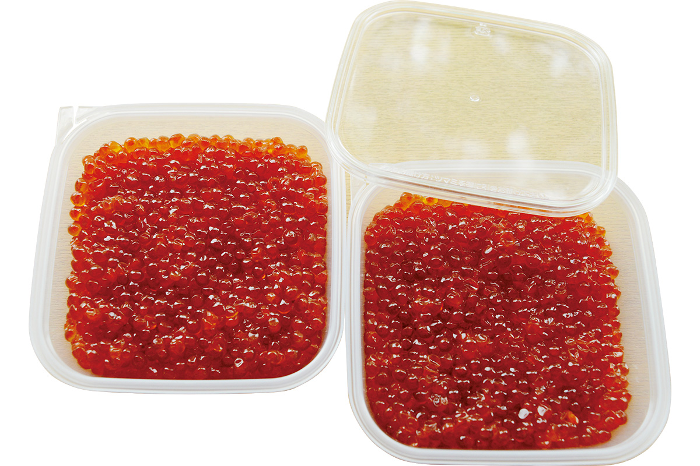
В сезон 2025–2026 годов ресторан работал только зимой, с 11 декабря 2025 года по 15 марта 2026 года, и принимал гостей по вечерам, с выходным в среду.
Kanisushi Kato Niseko
- Адрес
- префектура Хоккайдо, уезд Абута, Куттян, Ямада, 167-34, здание Hinzan, 1-й этаж
- Телефон
- +81 136-55-7577
- Часы работы
- 11:30–14:00 (последний заказ), 18:00–22:00 (последний заказ)
- Выходные
- без выходных
Айны
Лосось, рыба богов
Икру в Японии едят по праздникам, но и сам лосось издавна считается рыбой особой, праздничной. На Хоккайдо айны ставили свои деревни у рек, по которым шёл лосось. Осенью рыба, набравшая силы в море, поднималась на нерест огромными косяками, и айны называли её «камуй-чэп», рыба богов.
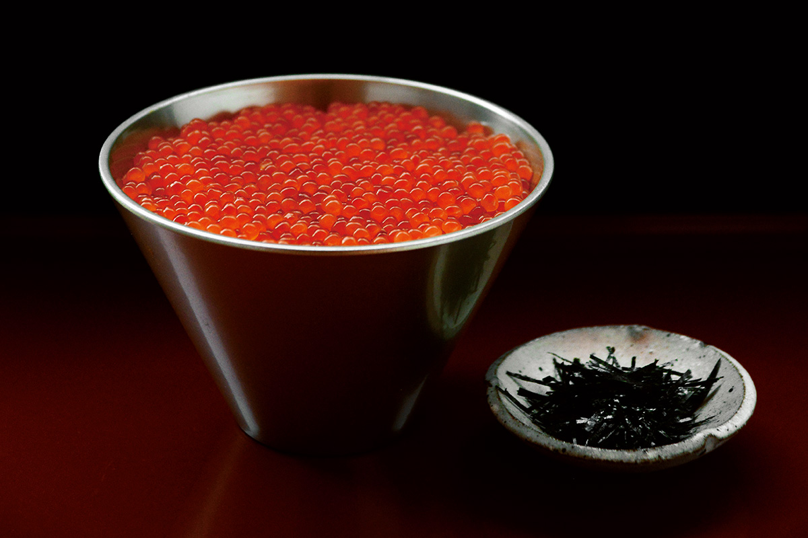
Айны ели не только мясо, но и внутренности и плавники, сушили и морозили рыбу, чтобы её хватило до весны. Из кожи шили зимнюю обувь, так что от лосося не пропадало ничего. Японское «руибэ», тонкие ломтики замороженного лосося, происходит от айнского слова «руйпэ». Икра по-айнски называется «чипоро»: её смешивали с толчёным картофелем или кашей и добавляли в еду как приправу.
Кулинар и преподаватель японской кухни из Токио, которая изучает рыбные традиции разных районов, советует есть такую икру просто и щедро. Её любимый вариант: рис для суши, лист нори и много икры сверху, так, чтобы икра была главным блюдом, а не украшением. Ещё она смешивает икру с крупно тёртой редькой дайкон, а для европейского стола поливает ею лосося, обжаренного в муке на сливочном масле: с маслом и сыром икра сочетается очень хорошо. К 2021 году уловы лосося у Хоккайдо несколько лет подряд были плохими, и дикая хоккайдская икра становилась всё большей редкостью.
Французская кухня
KAMIMURA: трюфельное масло, которое не отпускали из зала
KAMIMURA открылся в Нисэко в 2007 году. Шеф-повар и владелец Юити Камимура родился в Асахикаве, учился ремеслу в Сиднее, в ресторане Tetsuya's, куда, как говорят, труднее всего забронировать столик. Вернувшись в Японию, он держал ресторан в Саппоро, а потом перебрался в Нисэко.
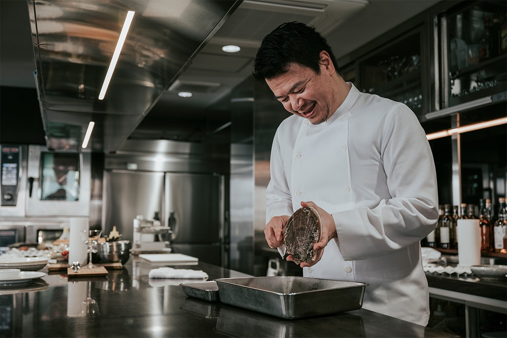
Повар берёт горные и морские продукты Хоккайдо и свободно добавляет к французской основе приёмы японской, западной и китайской кухни. В 2017 году KAMIMURA получил звезду в специальном выпуске гида Michelin по Хоккайдо, а в гиде Gault&Millau 2021 года два колпака.
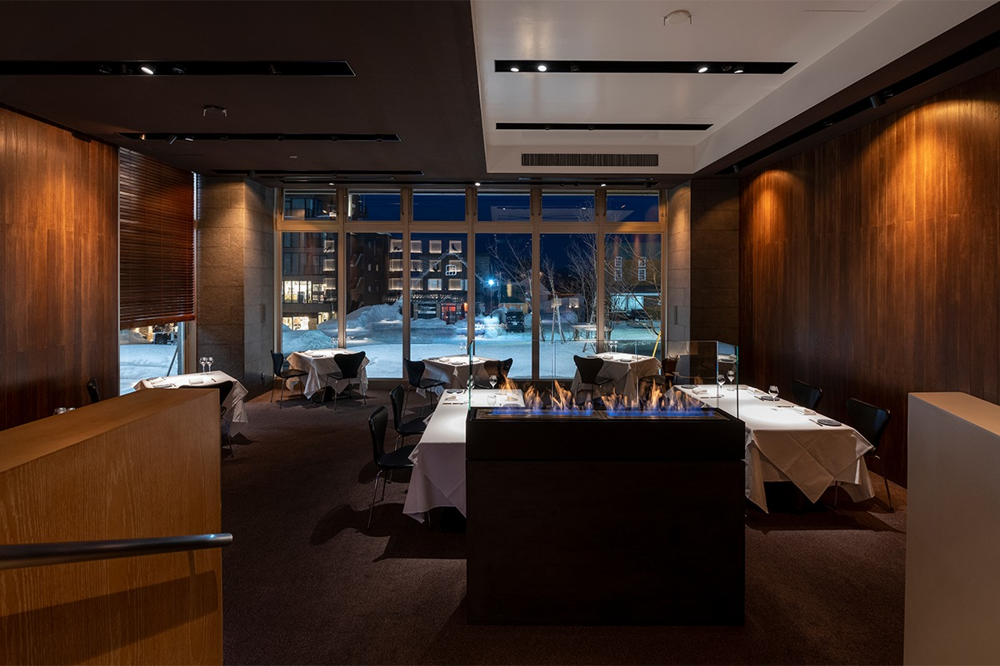
С первого дня к хлебу здесь подают трюфельное масло. Гости из Японии и из-за границы часто просили продать его с собой, но ресторан отказывал: масло должно было оставаться вкусом, который помнят по поездке в Нисэко. Всё изменила пандемия. Путешественников стало меньше, и в 2021 году KAMIMURA впервые начал продавать масло через интернет-магазин KAMIMURA at HOME.
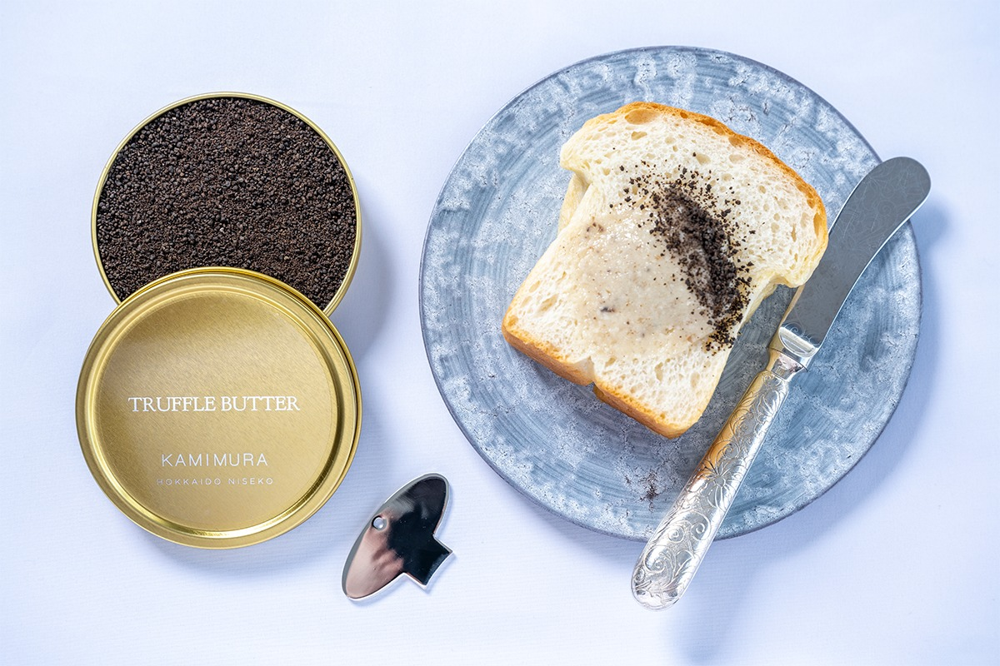
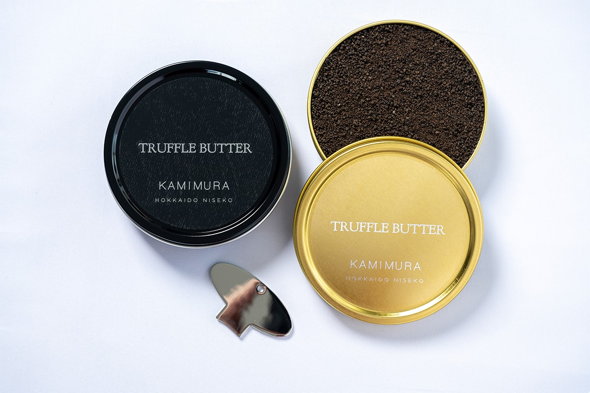
Аромат трюфеля ничем не заменить, и чтобы он держался до самого послевкусия, в масло кладут свежий чёрный трюфель из Франции и итальянское растительное масло с чёрным и белым трюфелем. Масло задумано прежде всего для хлеба: в нём соединяются мягкость сливочного масла, вкус свежих шампиньонов и глубина выдержанного сыра. Всё, кроме трюфеля, с Хоккайдо: несолёное масло Yotsuba из молока Токати, шампиньоны из Токати и твёрдый сыр «Тантака» с сыроварни на востоке острова. В 2021 году банка в 85 г стоила 2 500 иен.
Масло советуют есть на хлебе и крекерах, добавлять в омлет и яичницу-болтунью, в сливочный соус карбонары и в горячую пасту, а на пикнике класть на овощи с гриля.
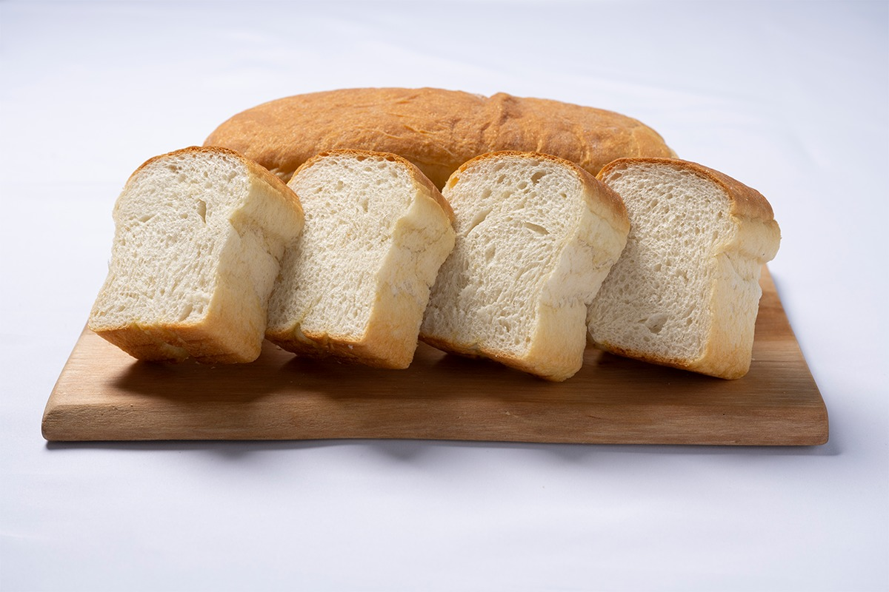
В том же магазине в 2021 году появились и блюда ресторана, которые достаточно разогреть. Суп из томатов и морепродуктов варят из рыбы, ракообразных и моллюсков ближних вод, которых выбирает сам шеф, со сладкими томатами из Нисэко, белым вином, орегано и базиликом.
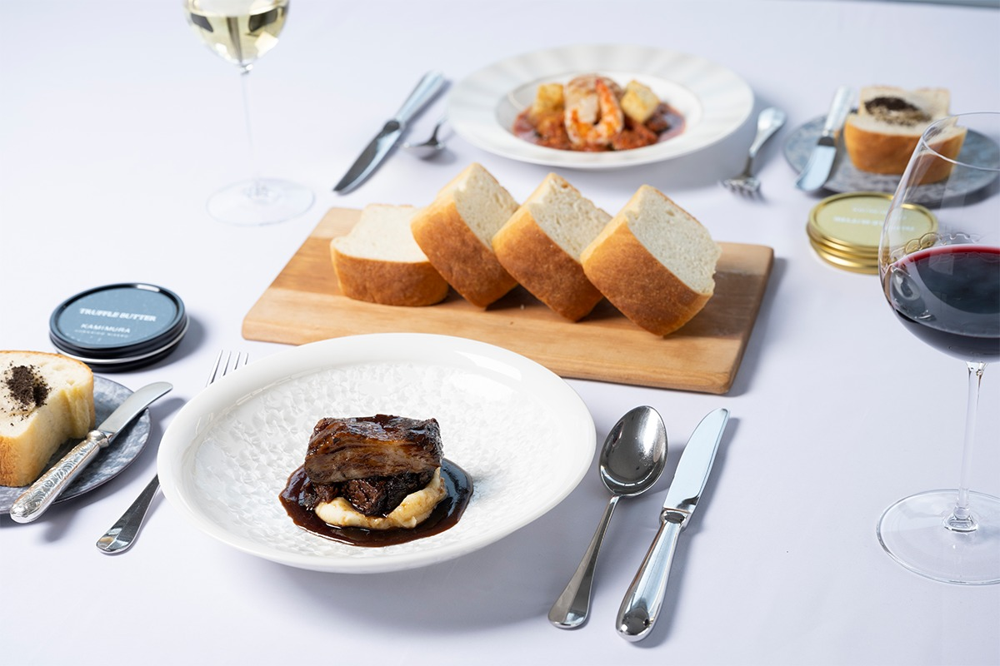
Говядину вагю тушат в красном вине из Ёити, сорт цвайгельт, на бульоне по рецепту отца шефа, который держит ресторан больше 50 лет. К мясу идёт пюре из картофеля с фермы в Нисэко и английская морская соль Maldon.
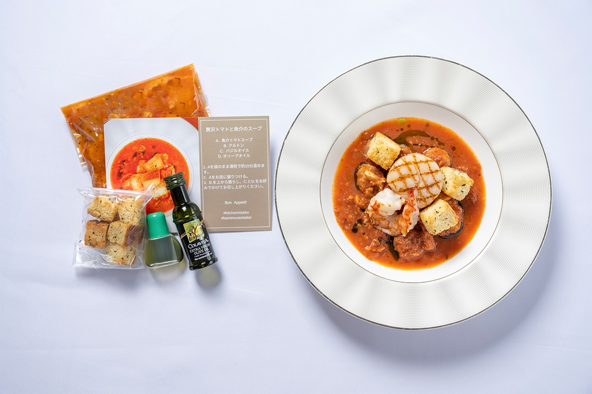
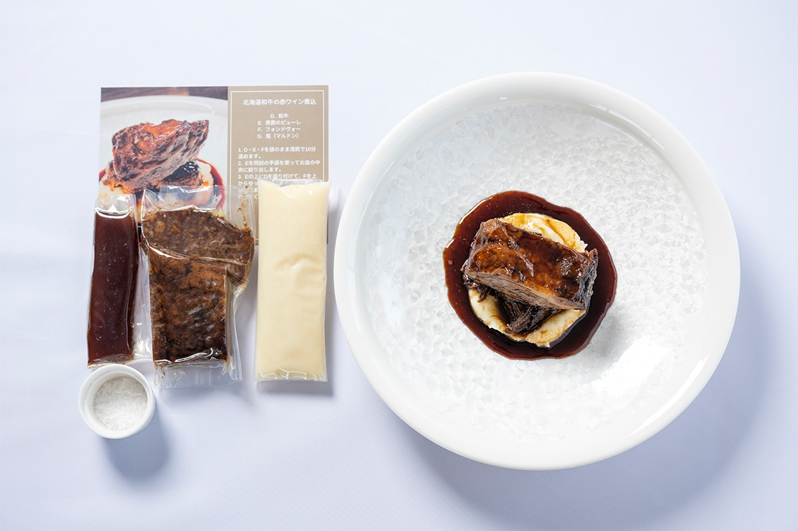
KAMIMURA
- Адрес
- префектура Хоккайдо, уезд Абута, Куттян, Ямада, 190-4, здание «Сики Нисэко», 1-й этаж
- Телефон
- +81 136-21-2288
- Сайт
- kamimura-100302.square.site (интернет-магазин KAMIMURA at HOME)
Фото: Кэндзи Итано.